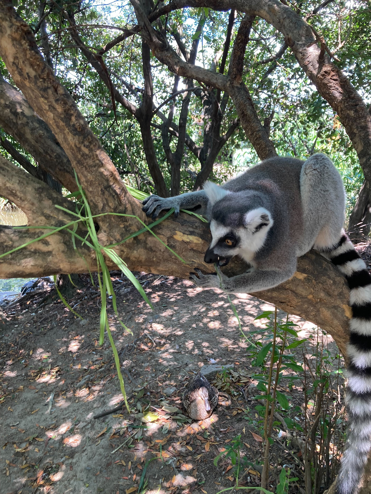
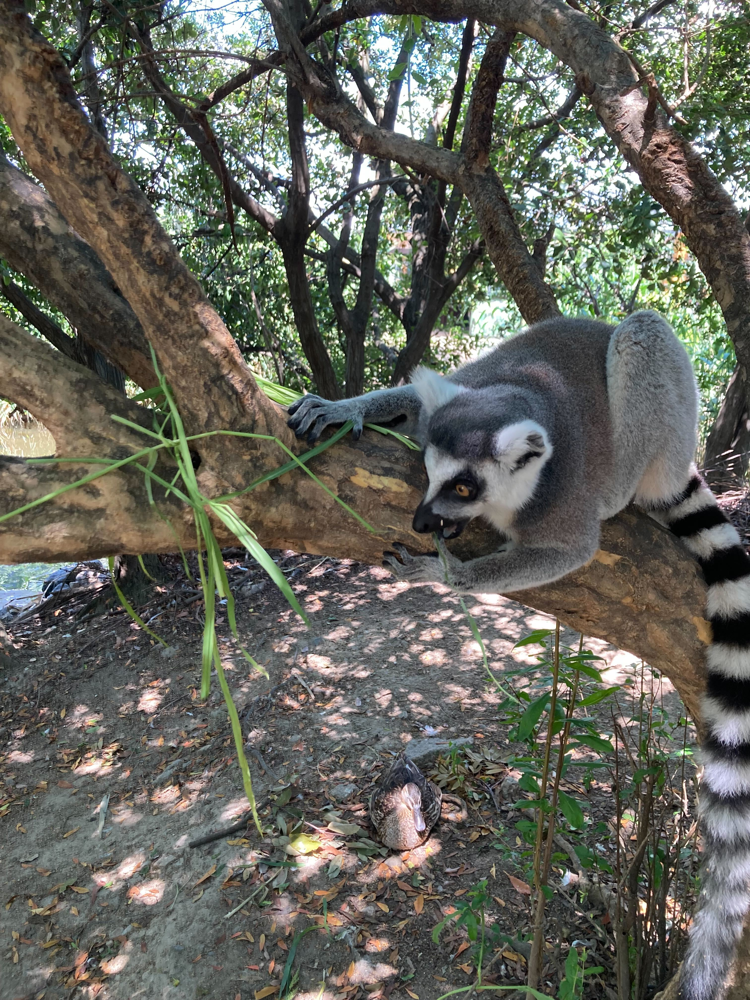
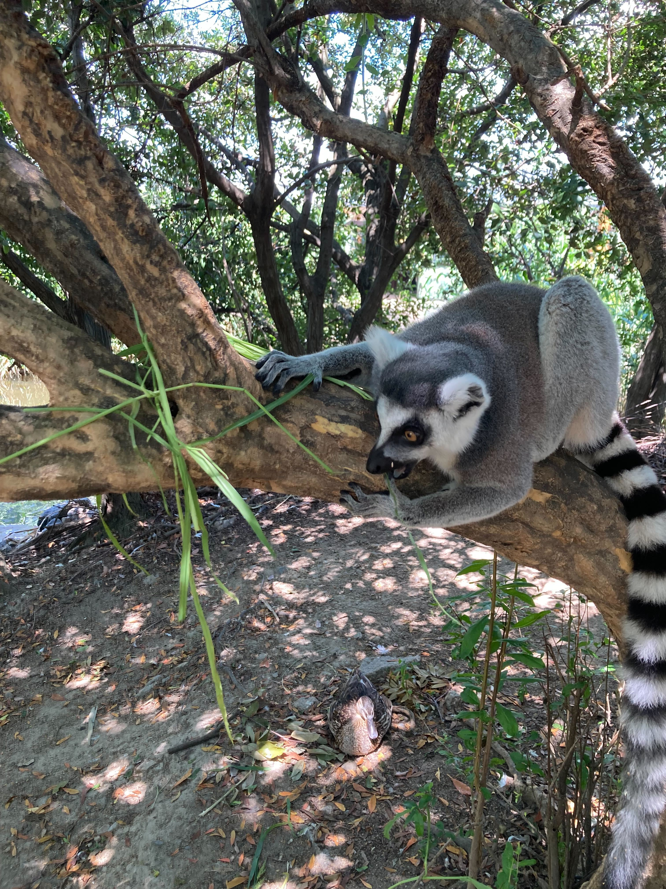

King Dom日記
ワオキツネザル
霊長目キツネザル科ワオキツネザル属
アフリカの東に浮かぶマダガスカル島にのみ生息しています。乾燥した森からマングローブまでさまざまな場所に適応できる順応性の高い動物です。
体重3kgほどの小さな体ですが、体長より長いしま模様の尾が目をひきます。
群れのなかまと木の上で過ごすことが多く、ときに地上におり尾を高くあげて移動します。
おもに葉や花などの植物を食べるサルです。
絶滅危惧種になっています。

戻る
 
